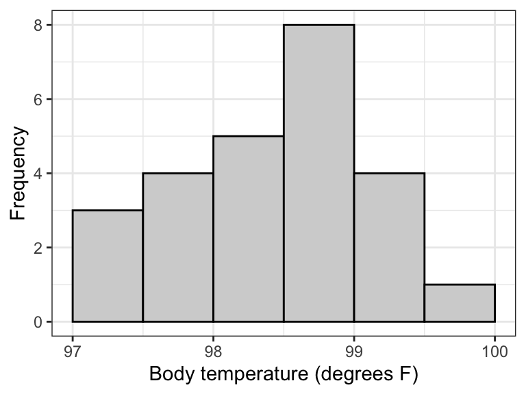
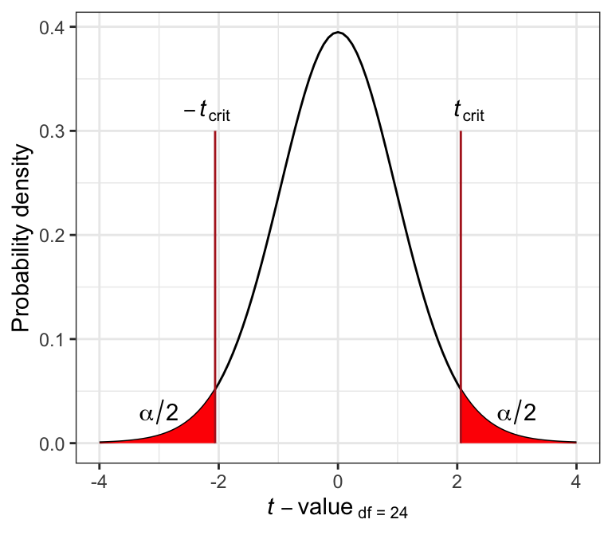

library(dplyr)
library(ggplot2)
library(readr)
library(knitr)
library(janitor)
library(biol202)12 Analyzing a single numerical variable
Tutorial learning objectives
- Learn about the one-sample t-test, which compares the mean from a sample of individuals to a value for the population mean (\(\mu_0\)) proposed in the null hypothesis
- Learn the assumptions of a one-sample t-test
- Learn how to calculate an exact confidence interval for a population mean (\(\mu\))
- Learn the confidence interval approach for testing the plausibility of a hypothesized value for \(\mu\)
12.1 Load packages and import data
Load the packages we need for this tutorial:
We’ll use the following datasets:
- the “bodytemp” dataset. These are the data associated with Example 11.3 in the text (page 310)
- the “stalkies” dataset. These are the data associated with Example 11.2 in the text (page 307)
data(bodytemp)
data(stalkies)
Note
Reminder: Before proceeding further, remember to get an overview of each of these datasets.
12.2 One-sample t-test
We previously learned statistical tests for testing hypotheses about categorical response variables. For instance, we learned how to conduct a \(\chi^2\) contingency test to test the null hypothesis that there is no association between two categorical variables.
Here we are going to learn our first statistical test for testing hypotheses about a numeric response variable, specifically one whose probability distribution in the population is normally distributed.
12.2.1 Hypothesis statement
Review the earlier tutorial that lists the steps to hypothesis testing.
We’ll use the body temperature data for this example, as described in example 11.3 in the text.
Americans are taught as kids that the normal human body temperature is 98.6 degrees Farenheit.
Are the data consistent with this assertion?
- We’ll use a one-sample t-test test to test the null hypothesis, because we’re dealing with a single numerical response variable, and we’re using a sample of individuals to draw inferences about a hypothesized (population) mean \(\mu_0\)
The hypotheses for this test:
H0: The mean human body temperature is 98.6\(^\circ\)F (\(\mu_0\) = 98.6\(^\circ\)F).
HA: The mean human body temperature is not 98.6\(^\circ\)F (\(\mu_0 \ne 98.6^\circ\)F).
Note
TIP You can add a degree symbol using this syntax in markdown: $^\circ$, so degrees Celsius would be $^\circ$C
- We’ll use an \(\alpha\) level of 0.05.
- It is a two-tailed alternative hypothesis
12.2.2 Assumptions of one-sample t-test
The assumptions of the one-sample t-test are as follows:
- the sampling units are randomly sampled from the population (a standard assumption)
- the variable is normally distributed in the population
Consult the “checking assumptions” tutorial for how to formally check the second assumption. For now we’ll assume both assumptions are met.
Note
If the normal distribution assumption is not met, and no data transformation helps, then one can conduct a “non-parametric” test in lieu of the one-sample t-test, including a “Sign test” or a “Wilcoxon signed-rank test”. A tutorial on non-parametric tests is under development, but will not be deployed until 2023. Consult chapter 13 in the Whitlock & Schluter text, and this website for some R examples.
12.2.3 A graph to accompany a one-sample t-test
Let’s create a histogram of the body temperatures, because this is the most appropriate way to visualize the frequency distribution of a single numeric variable.
Note
Histograms may look a little wonky if you have small sample sizes. This is OK!
If you forget how to create a histogram, consult the previous tutorial on visualizing a single numeric variable.
Here we’ll learn a few more tricks for producing a high-quality histogram.
The first step is to figure out the minimum and maximum values of your numeric variable, and you should have already done this by reading the “Min.” and “Max.” lines off the summary function’s output, when you got an overview of the dataset (when you first imported the data).
For the temperature variable, our minimum and maximum values were 97.4 and 100, respectively.
We’ll use this information to ensure that the histogram spans the appropriate range along the x-axis, and to decide on the appropriate “bin widths”:
bodytemp %>%
ggplot(aes(x = temperature)) +
geom_histogram(binwidth = 0.5, boundary = 97,
colour = "black", fill = "lightgrey",) +
xlab("Body temperature (degrees F)") +
ylab("Frequency") +
theme_bw()
Note
Notice the new argument to the geom_histogram function: “boundary”. Why include this? The minimum value in our dataset is 97.4. Based on our overview of the data, we decided to use a “binwidth” of 0.5. Therefore, it made most sense to have our bins (bars) start at 97, the first whole number preceding our minimum value, then have breaks every 0.5 units thereafter. Constructing the histogram this way makes it easier to interpret.
Recall that it can take a few times playing with different values of “binwidth” to make the histogram have the right number of bins.
Interpreting the histogram:
We can see in the histogram above that most of the individuals had temperatures between 98 and 99\(^\circ\)F, which is consistent with conventional wisdom, but there are 7 people with temperature below 98\(^\circ\)F, and 5 with temperatures above 99\(^\circ\)F. The frequency distribution is unimodal but not especially symmetrical.
12.2.4 Conduct the one-sample t-test
We use the t.test function (it comes with the base package loaded with R) to conduct a one-sample t-test.
?t.test This function is used for both one-sample and two-sample t-tests (covered later), and for calculating 95% confidence intervals for a mean (later in this tutorial).
Because this function has multiple purposes, be sure to pay attention to the arguments.
Here’s the code, which we’ll explain after:
body.ttest <- bodytemp %>%
select(temperature) %>%
t.test(mu = 98.6, alternative = "two.sided", conf.level = 0.95) - We first assign our results to a new object called “body.ttest”
- We then
selectthe variable “temperature”, as this is the one being analyzed - We then conduct the test using the function
t.test, specifying the null hypothesized value as “mu = 98.6” - We specify “two.sided” for the “alternative” argument
- We provide the “conf.level” of 0.95, which is equal to \(1-\alpha\)
Let’s look at the results:
body.ttest
#>
#> One Sample t-test
#>
#> data: .
#> t = -0.56065, df = 24, p-value = 0.5802
#> alternative hypothesis: true mean is not equal to 98.6
#> 95 percent confidence interval:
#> 98.24422 98.80378
#> sample estimates:
#> mean of x
#> 98.524The output includes:
- The calculated test statistic t
- The degrees of freedom
- The P-value for the test
- A 95% confidence interval for \(\mu\)
- The sample-based estimate, denoted “mean of x”, but is our (\({\bar{Y}}\))
The observed P-value for our test is larger than our \(\alpha\) level of 0.05. We therefore fail to reject the null hypothesis.
12.2.5 Concluding statement for the one-sample t-test
Here’s an example of an appropriately worded concluding statement, including all the relevant information:
We have no reason to reject the null hypothesis that the mean body temperature of a healthy human is 98.6\(^\circ\)F (one-sample t-test; t = -0.56; n = 25 or df = 24; P = 0.58; 95% confidence interval: 98.244 \(< \mu <\) 98.804).
Note
TIP The confidence interval provided by the t.test function is accurate and good to report with your concluding statement for a one-sample t-test. However, below we learn a different way to calculate the confidence interval.
12.3 Confidence intervals for \(\mu\)
In an earlier tutorial we learned about the rule of thumb 95% confidence interval.
Now we will learn how to calculate confidence intervals more precisely.
There are two typical uses of confidence intervals:
- When we are estimating a population parameter (such as \(\mu\)) based on a random sample, in which case the confidence interval is an ideal measure of precision to accompany our estimate
- As an alternative to a formal hypothesis test, in which case we determine whether the hypothesized value of the population parameter (e.g. \(\mu_0\)) is a plausible value for \(\mu\), based on the confidence interval calculated using our sample data
We’ll explore the latter use of confidence intervals later in this tutorial. For now, let’s demonstrate the first use of confidence intervals: as a measure of precision for an estimate.
12.3.1 Confidence interval as a measure of precision for an estimate
Note
A straightforward way to calculate the confidence interval for the mean of a numeric variable is using the t.test function. For an example, see this tutorial section.
The formula for a 95% confidence interval for \(\mu\) is:
\[{\bar{Y}} - t_{0.05(2),df}SE_{\bar{Y}} < \mu < {\bar{Y}} + t_{0.05(2),df}SE_{\bar{Y}}\]
The \(t_{0.05(2),df}\) represents the critical value of t for a two-tailed test with \(\alpha = 0.05\), and degrees of freedom (df), which is calculated from our sample size as \(df = n - 1\).
\(SE_{\bar{Y}}\) is the familiar standard error of the mean, calculated as:
\[SE_{\bar{Y}} = \frac{s}{\sqrt{n}}\]
The lower 95 confidence limit is the value to the left of the \(\mu\) in the equation above, and the upper 95% confidence limit is the value to the right of of the \(\mu\) in the equation.
So now we need to figure out the critical value \(t_{0.05(2),df}\).
For the body temperature example, we have \(n = 25\) and thus \(df = 25-1 = 24\).
Optionally, we could assign all these values to objects first, for use later:
alpha <- 0.05
n <- 25
d_f = n - 1The function we use to find the critical value of t is the base function qt:
?qtThe qt function only deals with one tail of the distribution. Thus, if we have a two-sided alternative hypothesis, we need to divide our \(\alpha\) level by two in order to calculate the appropriate critical value of t.
The following graph illustrates this for the t distribution associated with df = 24 and \(\alpha(2)\) = 0.05. Specifically, the \(t_{crit}\) values are shown by the vertical lines, and delimit the points beyond which the area under the curve towards the tail is equal to \(\alpha / 2\) (and thus the total area of both red zones= \(\alpha\)).

Here’s the code to calculate the critical value of t, and recall that we’ve defined alpha and d_f above:
tcrit <- qt(p = alpha/2, df = d_f, lower.tail = FALSE)In the code above:
- We assign the result to a new object called
tcrit - The \(\alpha(2) = 0.05\) is divided by 2, because we have a two-sided alternative hypothesis
- The degrees of freedom (which we stored in an object called
d_f) - We specified
lower.tail = FALSEto tell R that we’d like to focus on calculating the critical value for the right-hand (upper) tail, and thus the positive critical value
Alternatively, we could simply provide the values of alpha and degrees of freedom directly to the function arguments:
tcrit <- qt(0.05/2, df = 24, lower.tail = FALSE)
Note
TIP If instead we wanted to calculate a 99% confidence interval, then \(\alpha(2) = 0.01\), and we’d use 0.01 instead of 0.05 in the qt function above. Try it out!
Now let’s see what the output is:
tcrit
#> [1] 2.063899So to recap, this procedure used R code to give us what we’d otherwise need to look up in a statistical table, like the one provided in the text book.
Now that we’ve determined the value for \(t_{0.05(2),24}\), we need to calculate \(SE_{\bar{Y}}\), which we already learned how to do. So let’s improve on what we learned in the estimation tutorial, where we learned how to calculate the rule-of-thumb confidence interval.
There, we generated a table (actually a “tibble”) of summary statistics that included the rule-of-thumb confidence limits; now we can include the precisely calculated lower and upper 95% confidence limits.
Recall that we’ve already created an object “tcrit” that holds our required critical value of t.
Here we’ll assign the output to a tibble called “bodytemp.stats”:
bodytemp.stats <- bodytemp %>%
summarise(
Count = sum(!is.na(temperature)),
Mean_temp = mean(temperature, na.rm = TRUE),
SD_temp = sd(temperature, na.rm = TRUE),
SEM = SD_temp/sqrt(Count),
Lower_95_CL = Mean_temp - tcrit * SEM,
Upper_95_CL = Mean_temp + tcrit * SEM
)The summarise function is used to create new summary variables, as we’ve learned before.
The new part here is that we’re calculating precisely the lower and upper 95% confidence limits, using the combination of the tcrit value that we calculated and the “SEM” (standard error).
Now let’s use the kable function to produce a nice table, and here we’ll use “digits = 3” because that’s appropriate for the confidence limits (noting that it will report three decimal places for all our calculated values):
kable(bodytemp.stats, digits = 3)| Count | Mean_temp | SD_temp | SEM | Lower_95_CL | Upper_95_CL |
|---|---|---|---|---|---|
| 25 | 98.524 | 0.678 | 0.136 | 98.244 | 98.804 |
If we wanted to report the confidence interval on its own, we can get the necessary information from our newly created tibble “bodytemp.stats”, and type the following inline code in our markdown text (NOT in a code chunk):
Which will provide:
98.244 < \(\mu\) < 98.804
12.3.2 Confidence interval approach to hypothesis testing
Recall our null and alternative hypotheses for the body temperature example:
H0: The mean human body temperature is 98.6\(^\circ\)F (\(\mu_0\) = 98.6\(^\circ\)F).
HA: The mean human body temperature is not 98.6\(^\circ\)F (\(\mu_0 \ne 98.6^\circ\)F).
The null hypothesis proposed \(\mu_0\) = 98.6\(^\circ\)F.
The confidence interval approach to testing a null hypothesis involves:
- specifying a level of confidence, 100% \(\times\) (1-\(\alpha\)), such as 95%
- calculating the confidence interval for \(\mu\) using the sample data
- determining whether or not \(\mu_0\) lies within the calculated confidence interval
If it does, then the proposed value of \(\mu_0\) is plausible, and there’s no reason to reject the null hypothesis.
If it does not, then we reject the null hypothesis and conclude that plausible values of \(\mu\) are between our lower and upper confidence limits.
For example, for the body temperature example, we calculated a 95% confidence interval as:
98.244 < \(\mu\) < 98.804
The hypothesized value of \(\mu_0\) was 98.6\(^\circ\)F, which is encompassed by our confidence interval. Thus, it is a plausible value, and there is no reason to reject the null hypothesis.
CautionActivity
Practice confidence intervals
- First, using the
bodytempdataset, calculate the 99% confidence interval for the mean body temperature in the population. - Then, using the “stalkies” dataset, use the confidence interval approach (95% confidence) to test the hypothesis that the average eye span in the population is \(\mu_0\) = 8.1mm